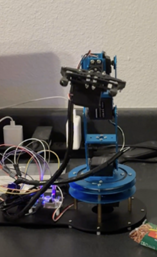

HMI ROBOTIC ARM

Project Overview
Built a real-time gesture-controlled robotic arm enabling intuitive human-robot interaction through hand gestures. The system leveraged MediaPipe for vision-based gesture recognition and STM32 for embedded control, allowing for object manipulation without external sensors or wearables. The project aimed to create a seamless human-machine interface driven purely by hand movements.
Computer Vision
Mediapipe
OpenCV
STM32 (external)
Python
Serial Communication
Technical Implementation
Module (MediaPipe + OpenCV):
- Used MediaPipe Hands for 21-point hand landmark tracking
- Developed custom Python logic to classify gestures (e.g., swipe, pinch, point, open, fist)
- Optimized for low latency and high accuracy under varied lighting conditions
Gesture-to-Command Mapping:
- Translated classified gestures into discrete control commands
- Ensured minimal false positives and smooth transitions between gesture states
Communication and Integration:
- Implemented UART/serial communication to interface the vision module with the STM32-based robotic arm
- Commands were parsed and executed on the STM32 to control servos for movement and object manipulation
Results and Impact
- Achieved 96%+ accuracy for basic control gestures (Open, Fist) with latency under 150 ms, ensuring smooth gripper control
- Complex gestures (e.g., Peace, Rock) maintained 93%+ accuracy and over 80% success rate, even with higher motion dynamics
- Enabled natural, real-time robotic control without the need for gloves or markers, demonstrating the feasibility of vision-only gesture-based human-machine interaction
- The system proved to be robust, responsive, and user-friendly, highlighting its potential in assistive robotics, remote control, and interactive applications